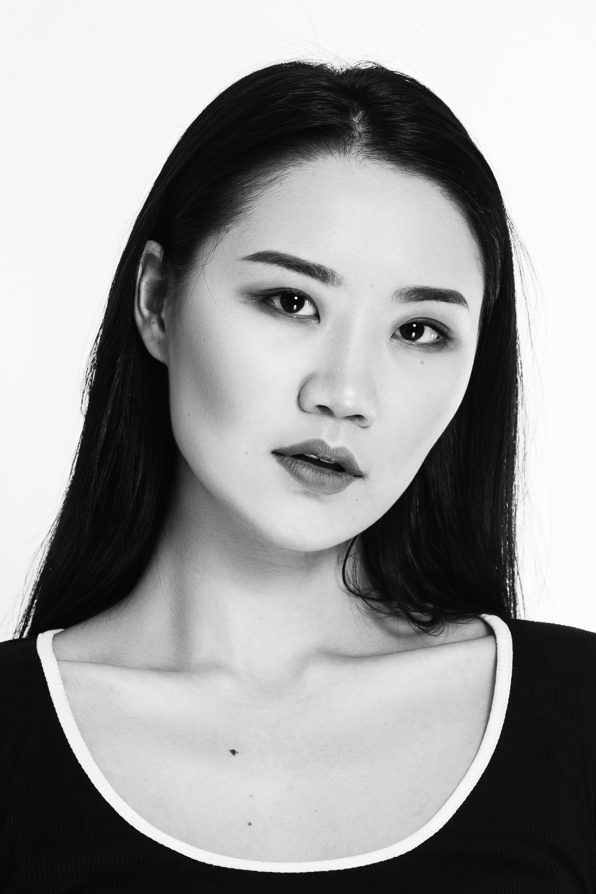

Freelance Model
Welcome to my modeling portfolio! I have been modeling part time since 2016. I have been signed with an agency in the past but currently I am a freelancer. I am Mongolian. Currently reside in Washington D.C. metro area. Most of my modeling experience is around Washington D.C metro area as well as PA and NY. I am also open to travel.
Over the years I had the opportunity to work in a wide range of modeling such as runway (NYFW), fashion, editorial (cover), swim, portrait, street, beauty, bridal and video.
ABOUT ME
